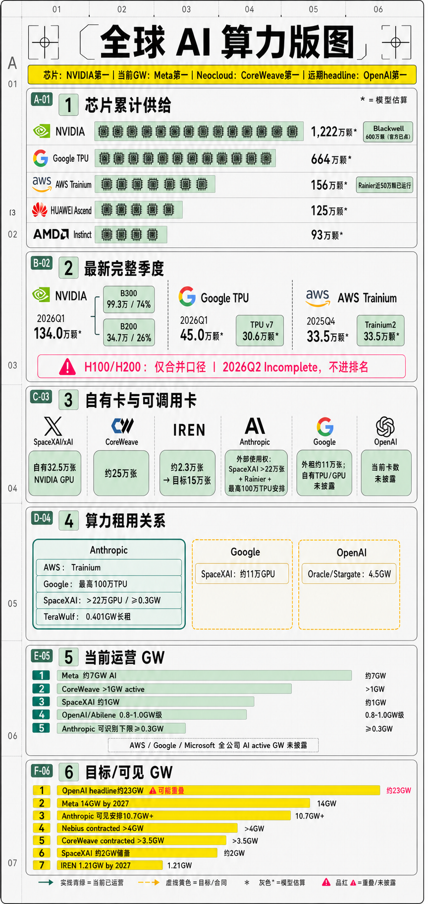

研究日期：2026-07-10；芯片口径校准：2026-07-12
方法：deep-research7 阶段协议
核心原则：卡、GW、供应方收入、需求方成本、建设 CapEx 分表

图例：青绿色为当前已运营，黄色为目标或合同，灰色星号为模型估算，品红色为重叠或未披露风险。
| 排名 | 设计方 | 累计数量级 | 结论 |
|---|---|---|---|
| 1 | NVIDIA | Epoch AI 估算约 1,222 万颗；另有官方过去四季度 600 万颗 Blackwell 锚点 | 全球通用 AI 加速卡绝对龙一 |
| 2 | Google TPU | 估算约 664 万颗 | 自研 ASIC 第一，但公司未披露官方总量 |
| 3 | Amazon Trainium/Inferentia | 估算约 156 万颗 | 云厂商 ASIC 第二；Rainier 近 50 万颗已运行 |
| 4 | Huawei Ascend | 估算约 125 万颗 | 数量级较大，但公开验证度低 |
| 5 | AMD Instinct | 估算约 93 万颗 | 通用 GPU 第二，规模仍明显落后 NVIDIA |
| 6 | Cambricon | 估算约 13.5 万颗 | 仍处较小规模 |
这是芯片设计方累计供给估算，不是某家云厂商当前持有量。除 NVIDIA 的 600 万颗 Blackwell 和 AWS Rainier 近 50 万颗外，其余主要为模型估算。
| 排名 | 公司 | 当前自有/运营卡 | 判断 |
|---|---|---|---|
| 1 | SpaceXAI/xAI | 约 32.5 万张 NVIDIA GPU | 已披露自有池龙一，且部分出租 |
| 2 | CoreWeave | 约 25 万张 NVIDIA GPU | 时点偏旧，实际可能更高 |
| 3 | IREN | 前期基线约 2.3 万张 | 目标 15 万张，当前与目标差距较大 |
Google、AWS、Microsoft、Meta 和 Oracle 没有披露同口径当前自有总卡数，不能因为缺数据就排在后三名。Meta 的 130 万是历史目标，不是已确认当前实数。
| 相对位置 | 公司 | 已披露可调用资源 | 结论 |
|---|---|---|---|
| 1 | Anthropic | SpaceXAI >22 万张 NVIDIA GPU；工作负载已进入 Rainier 近 50 万颗 Trainium2 集群；另有最高 100 万 TPU 安排 | 公开拆分最清楚，外部算力池大，但不同资源不能机械相加 |
| 2 | SpaceXAI 约 11 万张 NVIDIA GPU，另有未披露的自有 TPU/GPU | 实际总量很可能更大，但无法精确排名 | |
| N/A | OpenAI | AWS 数十万张级及 Oracle/NVIDIA/AMD 多方承诺 | 绝对规模可能领先，但当前卡数未披露，不能硬排 |
| 排名 | 公司/体系 | 当前运营口径 | 可信度与限制 |
|---|---|---|---|
| 1 | Meta | 约 7GW AI（2026） | 单一媒体口径，中可信 |
| 2 | CoreWeave | >1GW active | 公司披露，较清楚 |
| 3 | SpaceXAI/xAI | 约 1GW | 自用与外租共享同一总池 |
| 4 | OpenAI/Abilene | 约 0.8-1.0GW 级部分投运 | 仅代表 Abilene，不是 OpenAI 全球总量 |
| 5 | Anthropic | 可直接识别至少 0.3GW SpaceXAI 短租 | AWS/Google 当前 active GW 未拆出，实际明显高于该下限 |
AWS、Google、Microsoft 的全公司 AI active GW 均未披露，不能进入同口径实数排名。
| 排名 | 公司/体系 | 目标/可见总量 | 含金量判断 |
|---|---|---|---|
| 1 | OpenAI | headline 约 23GW | 最大，但多份合作可能重叠，去重后会下降 |
| 2 | Meta | 14GW by 2027 | 时间明确，规划质量相对较高 |
| 3 | Anthropic | 可见资源安排约 10.7GW+ | 以采购、长租和短租为主，不是自建资产 |
| 4 | Nebius | contracted >4GW | 合同电力，不等于 active |
| 5 | CoreWeave | contracted >3.5GW | 已有 >1GW active，兑现度高于纯规划 |
| 6 | SpaceXAI/xAI | 大 Memphis 约 2GW | 扩建情景 |
| 7 | IREN | 1.21GW by 2027 | 另有 5GW pipeline，但不能算承诺容量 |
| 8 | Google Vizag | 官方 1GW | 单一项目，不代表 Google 全球总量 |
| 9 | TeraWulf | 0.401GW | Anthropic 长租，2027H2 起分阶段投运 |
一句话结论：芯片供给看 NVIDIA 第一、Google TPU 第二、AWS Trainium 第三；已披露自有卡看 SpaceXAI 第一、CoreWeave 第二；当前运营 GW 看 Meta 第一，Neocloud 中 CoreWeave 第一；远期 headline 看 OpenAI 第一，但可审计和兑现质量看 Meta、CoreWeave 更扎实。
| 口径 | 定义 | 能否用于当期收入分母 | 典型误区 |
|---|---|---|---|
| 实体卡数 | GPU/TPU/ASIC 的已部署数量 | 否 | 不同卡型和负载性能不同 |
| H100 等效 | 用模型折算不同芯片 | 否 | 折算假设可大幅改变结果 |
| active IT load | 已安装、已供电并可工作的 IT 功率 | 是 | 仍需核对利用率 |
| connected power | 已接入可用电力 | 否 | 可能未装 GPU/未上客户 |
| contracted power | 已签土地/电力/园区合同 | 否 | 可能尚未建设或并网 |
| 园区上限 | 多年后最终可容纳规模 | 否 | 只是资产期权，不是当前算力 |
口径修正：此前表格只收录少数公司公开披露，属于“公司样本”，不是 NVIDIA GPU 与各家 ASIC 的全球出货总量。用该样本与芯片厂年度出货比较，会系统性低估行业规模。以下先列行业供给，再列公司归属/使用权；两张表不得求和。
| 设计方/芯片 | 已确认官方锚点 | 第三方累计估算 | 统计时点 | 口径与可信度 |
|---|---|---|---|---|
| NVIDIA Blackwell | 过去四个季度已出货 600 万颗 | Epoch AI 估算 NVIDIA AI 芯片累计约 1,222 万颗，区间 1,051-1,404 万颗 | 官方锚点截至 2025-10-28；估算截至 2026H1 | 600 万为 Jensen Huang 公开披露，高可信；累计数含多代产品，且 2026Q2 标为 incomplete，模型估算 |
| Google TPU | Google 未披露全公司累计数量；Anthropic 合作口径为最高 100 万颗 TPU 使用能力 | Epoch AI 估算累计约 664 万颗，区间 532-800 万颗 | 估算截至 2026H1 | 100 万是单一客户可用安排，不是 Google 总出货；累计数为模型估算，中低可信 |
| AWS Trainium | Project Rainier 已运行近 50 万颗 Trainium2；AWS 当时预计 Anthropic 到 2025 年末使用 超过 100 万颗 | Epoch AI 估算 Amazon AI ASIC 累计约 156 万颗，区间 156-242 万颗 | 官方披露 2025-10；估算截至 2025 年末 | Rainier 运行量为 AWS 官方披露，高可信；>100 万为当时目标、不是已确认实际值；累计数为模型估算，中可信 |
| AMD Instinct | 公司未披露可比的累计出货颗数 | Epoch AI 估算累计约 93 万颗，区间 79-109 万颗 | 截至 2025 年末 | GPU 供应侧模型估算，中低可信 |
| Huawei Ascend | 未找到可比的官方累计出货口径 | Epoch AI 估算累计约 125 万颗 | 截至 2025 年末 | 区间未提供，供应链假设较多，低可信 |
| Cambricon | 未找到可比的官方累计出货口径 | Epoch AI 估算累计约 13.5 万颗，区间 12.4-17.7 万颗 | 截至 2025 年末 | 模型估算，低可信 |
交叉检查结论：行业确实已经是“千万颗级累计供给、数百万颗级年度增量”，原公司样本显著低于供应侧总量是正常现象。Epoch AI 模型给出的 2025 年六家设计方净增合计约 959 万颗，但 NVIDIA 官方“过去四季度 600 万颗 Blackwell”高于该模型对 NVIDIA 2025 年净增约 449 万颗的估算。因此，报告以官方披露作为硬锚，Epoch 只用于判断数量级和补足 ASIC，不把模型中位数写成确定事实。
| 排名 | 设计方 | 最新完整季度 | 当季估算出货 | 产品构成 | 可信度与限制 |
|---|---|---|---|---|---|
| 1 | NVIDIA | 2026Q1 | 约 134.0 万颗 | B300 99.3 万 + B200 34.7 万 | Epoch 模型估算；B300 占约 74% |
| 2 | 2026Q1 | 约 45.0 万颗 | TPU v7 30.6 万 + TPU v6e 14.4 万 | Epoch 模型估算；v7 占约 68% | |
| 3 | AWS | 2025Q4 | 约 33.5 万颗 | Trainium2 | 最新可用完整季度；Epoch 模型估算 |
| 4 | Huawei | 2025Q4 | 约 20.0 万颗 | Ascend 910C 15 万 + 910B 5 万 | 供应链假设较多，低可信 |
| 5 | AMD | FY2025Q4 | 约 12.9 万颗 | MI355X 3.7 万、MI350X 3.5 万、MI308X 3.3 万等 | 财季口径；Epoch 模型估算 |
| 6 | Cambricon | 2025Q4 | 约 3.2 万颗 | Siyuan 590 | 模型估算，低可信 |
为保持可比性，主表优先使用“最新完整季度”。Epoch 数据中的 2026Q2 NVIDIA B200 约 9.0 万、B300 约 31.2 万，合计约 40.2 万颗，但该季度被标记为
Incomplete，因此不进入排名，也不能与完整季度环比。
| 产品 | 2025 年估算出货 | 最新完整季度 | 最新季度估算 | 趋势判断 |
|---|---|---|---|---|
| B300 | 约 150.1 万颗 | 2026Q1 | 约 99.3 万颗 | 已成为增量主力，单季占 NVIDIA 模型出货约 74% |
| B200 | 约 172.1 万颗 | 2026Q1 | 约 34.7 万颗 | 仍在出货，但增量权重转向 B300 |
| H100/H200 合并 | 约 70.7 万颗 | 2025Q4 | 约 2.3 万颗 | 已进入代际退出阶段；公开数据不足以拆分 H100 与 H200 |
| H20 | 约 53.3 万颗 | 2025Q3 | 约 1.7 万颗 | 受区域和出口政策影响，后续季度不可简单外推 |
产品口径结论：可以跟踪 H200，但目前可靠公开估算只提供 H100/H200 合并项，单独写“H200 出货量”会制造假精确。B300 的趋势更清楚：2025 年内快速爬坡，2026Q1 已超过 B200，说明 NVIDIA 出货结构已从 Hopper/B200 明显迁移到 B300。
| 公司/体系 | 当前已部署/可使用 | 已采购/目标 | 卡型口径 | 资产/使用权 | 证据 |
|---|---|---|---|---|---|
| SpaceXAI/xAI | 约 325,000 张 NVIDIA GPU | Memphis 远期 1,000,000 张目标 | 实体 NVIDIA GPU | 自建资产；部分对外出租 | S01，高 |
| Anthropic | SpaceXAI 使用权 >220,000 张 NVIDIA GPU；其 AWS 工作负载已在近 500,000 颗 Trainium2 的 Rainier 集群运行 | Google 合作最高 1,000,000 TPU；AWS 曾给出 2025 年末 >1,000,000 Trainium2 使用目标，实际完成量未单独确认 | NVIDIA GPU、TPU、Trainium 分列 | 外采/租用，自有 0 | S01/S03/S04 + AWS 官方，高 |
| 自有 TPU/GPU 总数未披露 | SpaceXAI 约 110,000 张 NVIDIA GPU 使用权 | TPU + GPU | 自建 TPU + 外租 GPU | S02，高 | |
| Meta | 已完成总数未单独核验 | 2025 年末 >1.3m 混合 GPU 目标 | NVIDIA/AMD/MTIA 混合 | 自建为主 + 外采 | S20，中 |
| CoreWeave/CRWV | 最近对外整体数约 250,000 张，时点偏旧 | 持续部署 Blackwell/Rubin | NVIDIA 实体卡 | 云供应方资产 | 单源，中 |
| IREN | 前期基线约 23,000 张运营+已订购 | 已签采购使 fleet 目标 150,000 张 | NVIDIA B300 等 | 自购、对外云服务 | S07/S08，高 |
| OpenAI | 当前可使用总卡数未披露 | AWS「数十万张」级别及其他多方承诺 | NVIDIA/AMD/Trainium 混合 | 多云外采 | S09-S12，中 |
| AWS/Microsoft/Nebius/Oracle | N/A | 各自扩张 | 自研 ASIC + NVIDIA/AMD | 混合 | 披露不足 |
| 数字 | 性质 | 回答的问题 | 是否可相加 |
|---|---|---|---|
| 芯片厂年度出货 | 流量 | 一年新增多少颗芯片 | 可在同期间、同颗粒定义下相加 |
| 累计出货/部署 | 存量 | 历史上已进入市场多少颗 | 不能直接等同仍在运行，需扣除退役、库存和重复部署 |
| 公司资产/使用权 | 归属样本 | 谁拥有或可调用多少 | 覆盖不全，且云供应方与客户会重复出现，不能汇总成行业总量 |
| 公司/体系 | 当前运营总量 | 目标/可见总量 | 新建/自建 | 云/芯片采购 | 长租 | 短租 | 状态与去重 |
|---|---|---|---|---|---|---|---|
| Meta | 约 7GW AI（2026） | 14GW by 2027 | Prometheus/Hyperion 等自建；Hyperion 最终上限 5GW | AMD 等协议不另加公司总量 | N/A | N/A | 14GW 是 2027 目标；S18 单一媒体口径 |
| CoreWeave | >1GW active | >3.5GW contracted；2030 >8GW | 自建+合作园区 | N/A | 机房/设备租赁混合 | N/A | active 与 contracted 分开；S05 |
| SpaceXAI/xAI | 约 1GW | 大 Memphis 约 2GW 情景 | Colossus I/II 及扩建 | N/A | N/A | 对外出租位于该总池 | 自用+外租动态分配；S01 |
| Nebius | active 未披露 | 2026 年末 connected 0.8-1.0GW；contracted >4GW | 自有容量占 contracted >75% | N/A | 部分 colo | N/A | connected/contracted 都不是当前 active；S06 |
| IREN | AI active 未披露 | 0.48GW by 2026；1.21GW by 2027；5GW pipeline | 电力和园区资源自建 | GPU 自购 | N/A | N/A | 5GW 是安全电力管线，非 AI active；S08 |
| Anthropic | 即时外部容量至少 0.3GW | 可见安排约 10.7GW+ | 0 | AWS 最高 5GW + Google/Broadcom 5GW | TeraWulf 0.401GW | SpaceXAI 至少 0.3GW | 不同产品层仅作资源上限求和；S03/S04/S13 |
| OpenAI | Abilene 约 0.8-1.0GW 级部分投运 | headline 承诺约 23GW | 未见可比自有 GW | Stargate 10 + NVIDIA 5 + AMD 6 + AWS 2 | 多年云/园区合同 | 未单列 | 23GW 存在重叠，不是去重物理容量；S09-S12 |
| Oracle OCI | AI active 未披露 | OpenAI 合作额外 4.5GW | OCI/Stargate 供给 | N/A | N/A | N/A | 与 OpenAI 是一笔交易，行业求和只算一次 |
| TeraWulf | Anthropic 项目 0GW | 0.401GW critical IT load | 机房建设 | N/A | 20 年长租 | N/A | 2027H2 首期、2028 年初满载；S13 |
| 整体数据中心电力估算 5.2GW，非纯 AI active | Vizag 官方 1GW | TPU/园区自建 | N/A | N/A | SpaceXAI 110k GPU，MW 未披露 | 媒体 5GW 仅作园区远期上限；S02/S21/S22 | |
| AWS | 整体数据中心电力估算 10.6GW，非纯 AI active | 公司 AI 总目标未披露 | Project Rainier 等 | Anthropic 最高 5GW、OpenAI Trainium 2GW，可能共享扩建 | N/A | N/A | 客户侧会重复出现；S10/S19 |
| Microsoft | 整体数据中心电力估算 5.5GW，非纯 AI active | 公司 AI 总目标未披露 | Fairwater 等自建 | Neocloud 外采至少约 0.5GW 已披露项目 | N/A | N/A | 官方 Fairwater 不支持公司总 GW 反推；S19/S24 |
Anthropic 可见资源安排 约 10.7GW+ = 自建 0 + 云/芯片外采约 10 + 长租 0.401 + 短租至少 0.3
这个总数方便看规模，但不能用一个单价估值：AWS/Google 是云与芯片外采，TeraWulf 是长租机房，SpaceXAI 是短租全栈 GPU 算力。
Google 获得约 11 万张 NVIDIA GPU 使用权，但没有披露 MW/GW。因此进入「卡数表」的外租列，不进「GW 表」做反推。
| 供应方 | 收入口径 | 2026Q2E 算力相关总收入 | 年化收入/active GW | 置信度 | 备注 |
|---|---|---|---|---|---|
| CoreWeave | 公司收入，高度算力相关 | 2.45-2.60bn（指引） | 约 <=8.3bn/GW-year（用 Q1 年化） | 中高 | active >1GW，所以 8.3 是上限式估算 |
| Nebius | AI cloud 估算 | 0.55-0.75bn E | 前瞻 7-11bn/GW-year | 中 | 年末 ARR 7-9bn / connected 0.8-1.0GW；不是当前实现值 |
| IREN | AI cloud 估算 | 0.05-0.08bn E | 前瞻约 7.7bn/GW-year | 中低 | 3.7bn 目标 ARR / 0.48GW；建设斜率是核心风险 |
| Oracle OCI | OCI 分部，不是纯 AI 算力 | 5.8-6.3bn E | N/A | 中 | 不用 4.5GW 合同直接除 OCI 总收入 |
| SpaceXAI | 算力租用收入 | N/A | N/A | 低 | 合同起始、收入确认和实际分配 GW 不足 |
| TeraWulf | Anthropic 长租 | 0 | N/A | 高 | 2027H2 后才开始起租 |
E为本报告估算，不是已披露实际值。季度结束不等于所有公司已发布 Q2 财报。
| 供应方/合同 | 产品层级 | 合同价值/GW-year | 算法 | 主要不可比因素 |
|---|---|---|---|---|
| SpaceXAI-Anthropic | 短租全栈 GPU 算力 | 上限式约 50bn | 1.25bn/月 x 12 / 至少 0.3GW | 分母可能更大；取消安排；起始时间 |
| Oracle-OpenAI | 多年全栈云/园区 | 约 13.3bn | 300bn / 5 年 / 4.5GW | 合同边界、建设责任、预付款 |
| TeraWulf-Anthropic | critical IT load 长租 | 约 2.37bn | 19bn / 20 年 / 0.401GW | 不含同等全栈 GPU 产品；起租较晚 |
这张表只比「合同价值密度」，不比利润率。SpaceXAI 单价高，也意味着它承担更多 GPU、网络和软件栈成本；TeraWulf 单价低，但期限更长。
| 需求方 | 容量来源 | 可计算采购成本 | 不可计算部分 | 判断 |
|---|---|---|---|---|
| Anthropic | AWS/Google 云与芯片外采 | N/A | 合同金额/最低付款未完整披露 | 约 10GW 的主体成本不能计算 |
| Anthropic | SpaceXAI 短租 | 上限式约 50bn/GW-year | 实际 MW 分母、起止日、取消权 | 高价换交付速度，不应当长期基础费率 |
| Anthropic | TeraWulf 长租 | 约 2.37bn/GW-year | 芯片/云软件另行成本 | 20 年期限，资产层级更低 |
| OpenAI | Oracle 4.5GW | 约 13.3bn/GW-year | 合同边界与去重 | 多年采购义务，需与模型收入斜率匹配 |
| OpenAI | AWS/NVIDIA/AMD | N/A | 金额、实际部署地点和重叠 | 只能看承诺规模，不能计算统一成本 |
| SpaceXAI 约 110k GPU | N/A | 金额和 MW 未披露 | 购买时间与 NVIDIA 供给弹性，不代表 Google 缺乏自建能力 |
公开信息很少给出同口径「全栈 AI IT load 已完成成本/GW」。常见披露可能分别只包含：
因此本报告不采用「所有公司 30bn/GW」这种假精确数字排名。正确做法是为每个项目建立如下桥接：
Power/site + building/cooling + servers/network + financing + maintenance refresh - customer prepayment
目前可验证的是资本强度，而不是公司级同口径单 GW 成本。Oracle FY26 自由现金流为负 23.7bn，CoreWeave Q1 利息费用 0.536bn，都说明高收入密度并不自动等于高股东回报。
| 排名 | 公司 | 优势 | 主要风险 | 证据强度 |
|---|---|---|---|---|
| 1 | AWS | 客户池、Bedrock、Trainium、资产负债表 | CapEx、自研芯片生态 | 中高 |
| 2 | TPU + Gemini + Search + Cloud，成本与分发一体 | CapEx、监管、外租短期成本 | 高 | |
| 3 | Microsoft | Office/GitHub/Copilot 负载入口 | 外采依赖、自建交付速度 | 中 |
| 4 | Meta | 算力回报内化到广告与推荐 | 14GW 资本效率难单独观察 | 中 |
| 5 | Oracle | OCI 与数据库客户，大额合同 | 负 FCF、融资、客户集中 | 高 |
| 排名 | 公司 | 产业位置 | 为什么排在这里 | 什么情况会下调 |
|---|---|---|---|---|
| 1 | CoreWeave/CRWV | AI 原生全栈云 | >1GW active、>3.5GW contracted、收入与 backlog 最清晰 | 利用率下降、利息费用失控、旧卡残值快速下降 |
| 2 | Nebius/NBIS | 自建比例较高的 AI 云 | >4GW contracted、年末 connected 增长快，预付可优化融资 | connected 不能转 active，大客户集中 |
| 3 | IREN | 电力/土地资源转 GPU 云 | 0.48GW、15 万卡和 3.7bn ARR 目标带来高弹性 | 当前 AI 收入基数太小，建设/融资任一延期 |
| 4 | TeraWulf | 长租 critical IT load | 20 年合同期限长，需求风险低于短租 | 起租时间延后、客户集中、项目建设超支 |
SpaceXAI 因同时是模型公司、资产方和算力出租方，不强行塞进纯 Neocloud 名次。其交付速度和短租单价很高，但自用/外租冲突与合同取消权使长期现金流置信度较低。
| 公司 | 容量策略 | 优势 | 主要风险 | 相对判断 |
|---|---|---|---|---|
| Anthropic | AWS Trainium + Google TPU + NVIDIA GPU 多源组合 | 来源拆分更清楚，降低单一供应商依赖 | 云渠道分成、高额短租与多年义务 | 透明度领先 |
| OpenAI | Oracle/Stargate + AWS + NVIDIA + AMD 多方承诺 | 绝对规模大、供应链议价能力强 | GW 重叠、最低采购义务和现金消耗 | 规模领先、可审计性落后 |
| 指标 | 用途 |
|---|---|
| active AI MW/GW | 当期收入的物理分母 |
| connected/contracted -> active 转化 | 检验建设与上客户速度 |
| 实际部署卡数与代际 | 检验资本支出与技术折旧 |
| 利用率与收入/active GW | 检验价格和产品结构 |
| backlog 转收入 | 检验合同是否真正上线 |
| 客户预付款 | 检验外部融资压力 |
| 利息费用与债务到期 | 检验股东剩余价值 |
| CapEx - D&A - GPU refresh | 接近所有者收益口径 |
| 前五大客户占比 | 检验集中度和议价权 |
| 取消权/take-or-pay | 判断 backlog 的真实信用质量 |
当前结构下，风险调整后最好的资产仍然是「能够长期产生付费负载的入口」，其次才是已转为 active capacity 的全栈云，最后是只有土地/电力合同的远期 GW。
对上市标的的研究优先级，可分为两类：
本报告为研究资料，不构成投资建议。预测值与公司目标已标注，不与已披露实际值混用。
完整来源分级与证据对应关系见
03_source_catalog.csv和04_evidence_ledger.csv；25-28 号芯片校准来源及季度/产品出货的模型估算状态已回写台账。